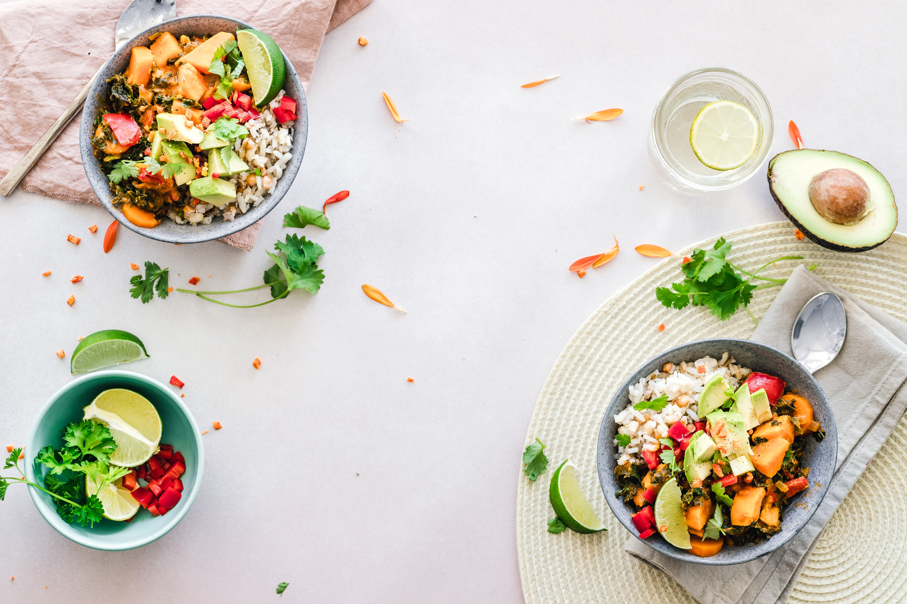

| Run to Table | |
NYC based, private chef offering fresh and healthy customized meal plans, event catering, and personalized cooking classes |
|
| Welcome,thanks for signing up for my email blast where I will send periodic recipes, kitchen tips and more! Summer is still here for a few more weeks. Beat the heat with this vegan ice cream recipe which is sweetened with real fruit and tastes great at a picnic or bbq.The best part is you can make it in a blender. No ice cream maker needed! Get this recipe here Also, be sure to check out my page to learn about my recipe demos at HellGate CSA. Have a great holiday weekend! Cheers until next time... -Chef Jill |
|
|  | Services |
| Kitchen | |
| About | |
| copyright 2019 Jillian Krebsbach | |